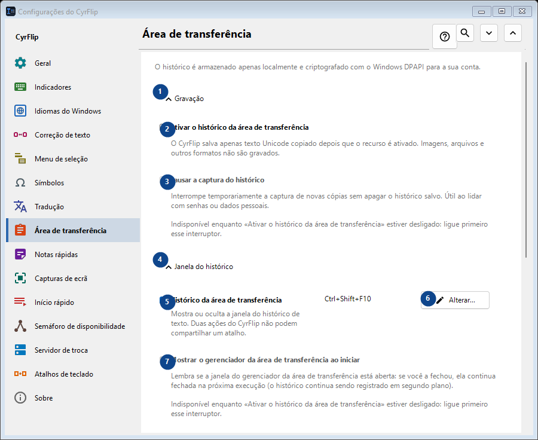
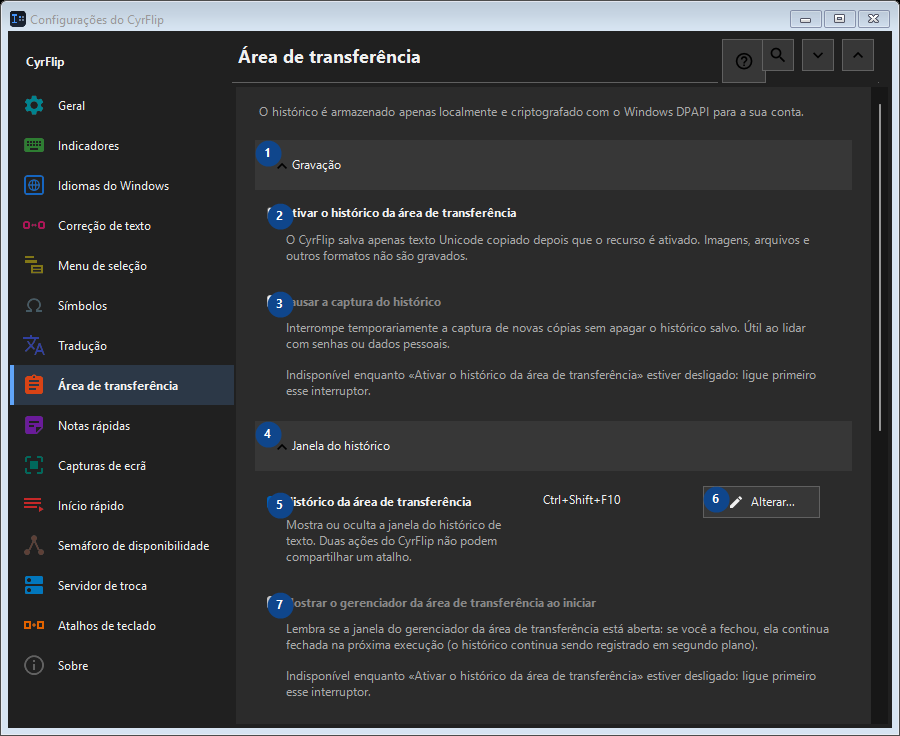

Área de transferência
Para que serve
O histórico é armazenado apenas localmente e criptografado com o Windows DPAPI para a sua conta.


Ordem de utilização
As definições são aplicadas de imediato. Não existe uma ordem obrigatória; use os grupos abaixo.
Elementos
1. Gravação
Use este comando para a ação indicada. Leia qualquer confirmação antes de aceitar.
Os seus atalhos2. Ativar o histórico da área de transferência
O CyrFlip salva apenas texto Unicode copiado depois que o recurso é ativado. Imagens, arquivos e outros formatos não são gravados.
Os seus atalhos3. Pausar a captura do histórico
Indisponível enquanto «Ativar o histórico da área de transferência» estiver desligado: ligue primeiro esse interruptor. Este elemento não está disponível. Ative primeiro a função ou selecione uma entrada.
Os seus atalhos4. Janela do histórico
Use este comando para a ação indicada. Leia qualquer confirmação antes de aceitar.
Os seus atalhos5. Histórico da área de transferência
Mostra ou oculta a janela do histórico de texto. Duas ações do CyrFlip não podem compartilhar um atalho.
Os seus atalhos6. Alterar - Histórico da área de transferência
Use este comando para a ação indicada. Leia qualquer confirmação antes de aceitar.
Os seus atalhos7. Mostrar o gerenciador da área de transferência ao iniciar
Indisponível enquanto «Ativar o histórico da área de transferência» estiver desligado: ligue primeiro esse interruptor. Este elemento não está disponível. Ative primeiro a função ou selecione uma entrada.
Os seus atalhos8. Transparência da janela do histórico
Indisponível enquanto «Ativar o histórico da área de transferência» estiver desligado: ligue primeiro esse interruptor. Este elemento não está disponível. Ative primeiro a função ou selecione uma entrada.
Os seus atalhos9. Pesquisar no histórico
Abre uma janela separada para pesquisar por um trecho de texto. Digite pelo menos três caracteres.
Os seus atalhos10. Limpeza
Use este comando para a ação indicada. Leia qualquer confirmação antes de aceitar.
Os seus atalhos11. Limpar todo o histórico
Exclui todas as entradas da memória e do arquivo local criptografado. Não é possível desfazer.
Os seus atalhos12. Transferência para outro computador
Use este comando para a ação indicada. Leia qualquer confirmação antes de aceitar.
Os seus atalhos13. Exportar...
Um único arquivo de texto aberto com as notas e o histórico da área de transferência escolhido: pode ser lido em qualquer editor ou no celular e importado no CyrFlip em outro computador. O arquivo não é criptografado. A importação mostra o que será adicionado e não exclui nada.
Os seus atalhos14. Importar...
Use este comando para a ação indicada. Leia qualquer confirmação antes de aceitar.
Os seus atalhos